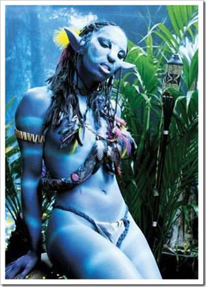

Побочное 4: Ксенофилия как норма жизни
Помнится, как-то читал статью Т. Толстой «Политическая корректность» и угорал со смеху. Давно это было, и сейчас уже как-то не смешно…
В новом издании книг Марка Твена «Приключения Гекльберри Финна» и «Приключения Тома Сойера» заменят слова, которые считаются оскорбительными для читателей. Речь идет о замене слова «негр» и других слов, обозначающих чернокожих…
В свеженьком фильме «Тор» Хеймдалль — негр.
В том же «Аватаре» — обратили внимание? — негров не видно. Все «плохиши» — белые, а «хорошие» — цветные, синие.
Агитация межрасовых браков — давно не редкость (причем именно в виде «негр и белая женщина» — так больше детей получится, плюс женщины более склонны к эмоциям в отношениях — мол, любофф все оправдает!).
В секс-магазинах давно уже продают не только надувных женщин, но и надувных овечек и проч.
Не будем жонглировать словами, рассуждая, является ли секс с на'ви зоофилией или всего лишь межрасовым сексом. Важно другое: по сравнению с такой экзотикой черно-белый секс — это так, мелочь.
И это — учтено и пропагандируются вполне явно. Как-то я увидел демотиватор с портретом инопланетной кошатины и искусственной вагиной синего цвета. Надпись не помню, что-то типа «Школота радостно обдрочится».
Но это — самодеятельность, профессионалы же всегда совмещают приятное с полезным. Изготовители секс-приспособлений Fleshlight уже выпустили набор — порнофильм на тему «Аватара» и специальная инопланетная синяя няшная вагина. Поменьше размером, конечно, а не от трехметровой дурынды.
Вот вам картинки — я тоже не сразу поверил. Ребенок на рекламе — с сайта, не фотомонтаж,


P.S. ««Atzzkiysotona: — 1. Зоофилка ли Эми Вонг (из мультика Футурама)? 2. Если зоофилка, то почему ее никто не о[б]суждает?
Doppel Herz: — Дело в том, что Эми Вонг не является персонажем, которому хотелось бы подражать — это глупая как пробка девица, проводящая жизнь в развлечениях на родительские деньги. Ее связь с инопланетным уродцем, безусловно, противоестественна, но мир 3000-х с точки зрения морали — отвратное место: мутанты, живущие в загаженных подземельях, будки для самоубийств, продажа органов и т.п. Я так понимаю, что создатели сериала в ироничном ключе показали, к чему приводит толерантность. Как всегда, подавляющая масса населения иронии не поняла.
Atzzkiysoton: — А вот это фанатам Футурамы расскажите. Они любят поржать, и поэтому оценят эти слова по достоинству.»
Как большой любитель «Футурамы» подтверждаю: связь Эми Вонг с Кифом Крокером — это именно что прикол «до чего можно дойти». Добавлю, что акцента на этом нет — так, обычная серия, одна из многих (Kif Gets Knocked Up a Notch, 1-я серия 4-го сезона). А вот в «Аватаре» весь сюжет на противоестественной влюбленности…